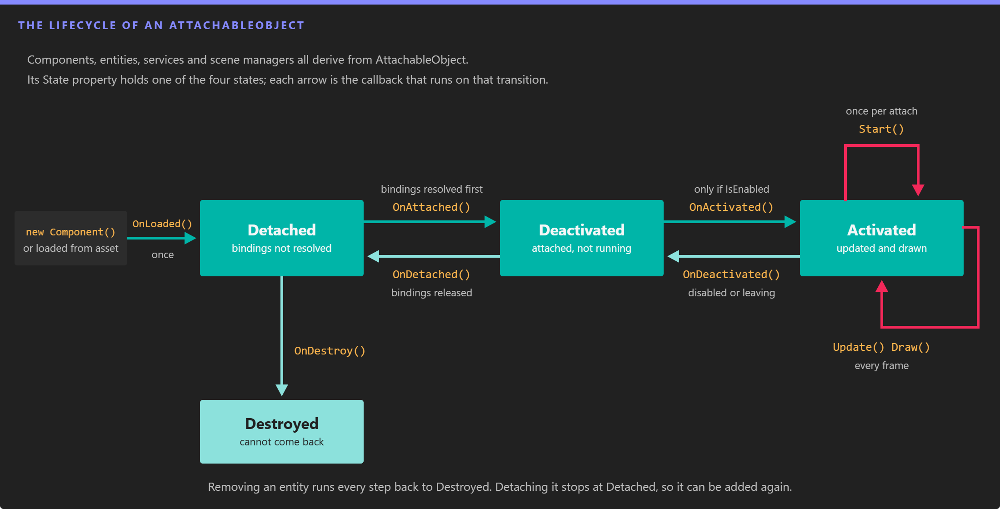

Lifecycle of Elements

Every component, entity, service and scene manager moves through the same four states. The callback on each arrow runs as the object changes state, so each one is the right place for a specific kind of work.
Components, entities, services and scene managers share one lifecycle. Evergine loads them, resolves their bindings, attaches them, activates them and starts them, and runs the same steps backwards when they go away. Knowing which callback runs when tells you where to put initialization, event subscriptions and cleanup so that enabling, disabling and removing an element never leaves anything behind.
All of these classes derive from AttachableObject:
- Components, including Behaviors and Drawables
- Entities
- Services
- Scene managers
States
The current state is exposed by the State property, of type AttachableObjectState:
| State | Meaning |
|---|---|
Detached |
The initial state. The object is not connected to a scene or to the application, and its bindings are not resolved. |
Deactivated |
The object is attached: its bindings are resolved and OnAttached() succeeded, but it is not running. A disabled component stays here. |
Activated |
The object is running. Behaviors are updated and drawables are drawn only in this state. |
Destroyed |
The object has been released. Nothing brings it back. |
The AttachableStateChanged event is raised every time the state changes.
Lifecycle Properties
| Property | Default | Description |
|---|---|---|
| IsEnabled | true |
Enables or disables the element. Setting it to false on an activated element deactivates it, and setting it back to true activates it again. A component is only activated when both the component and its entity are enabled. |
| State | Detached |
The current AttachableObjectState. Read only. |
| IsLoaded | false |
true once OnLoaded() has run. It never goes back to false. |
| IsAttached | false |
true while the state is Deactivated or Activated. |
| IsActivated | false |
true while the state is Activated. |
| IsStarted | false |
true once Start() has run and while the element is activated. It is reset when the element is detached. |
| IsDestroyed | false |
true once the element has been destroyed. |
Initialization
These callbacks run when an element enters a scene or the application. Override the ones you need and call the base implementation.
OnLoaded()
Runs once in the lifetime of the object, when it is created from code and added (for a component, when it is passed to AddComponent()) or when it is deserialized from a scene asset.
- Initialize here everything that does not depend on other elements: collections, default values, cached calculations.
- Bindings are not resolved yet, and a component has no
Owneryet.
OnAttached()
Runs when the element is attached, for example when its entity is added to the EntityManager.
- All bindings are resolved before this method runs. If a required binding cannot be resolved,
OnAttached()is not called and the element staysDetached(see Binding Errors). - Use it to establish relationships with other elements, such as registering the component with a scene manager.
- It returns a
bool. Returntrueif attaching succeeded. Returningfalseleaves the elementDetached.
Note
The elements you are bound to have been found, but they may not be attached yet. Do not call into them here.
OnActivated()
Runs when the element is activated, right after it is attached or when IsEnabled changes to true.
- It only runs when the element and its owner are enabled. If a component or its entity is disabled, the component stays
Deactivated. - Put here the setup that you undo in
OnDeactivated(), such as event subscriptions. It can run many times in the lifetime of the object.
Note
Your dependencies are attached at this point, but some of them may not be activated yet.
Start()
Runs once per attachment, before the first update, and only if the element is activated.
- Disabling and enabling an element does not call
Start()again. Detaching it and attaching it again does, afterOnAttached()andOnActivated(). - Use it for initialization that depends on other elements and must happen only once, such as reading the initial state of a bound component.
Note
Your dependencies are activated at this point, but some of them may not be started yet.
Per Frame Loop
Once started, some elements receive a call every frame. The Application page shows where these calls come from.
Update(TimeSpan gameTime)
Available on Behaviors, UpdatableService (services) and UpdatableSceneManager (scene managers).
- It runs once per frame, and only while the element is activated. A behavior is also skipped until it has started.
gameTimeis the time elapsed since the previous frame, scaled by the sceneSpeedfor behaviors and scene managers.- Put here the logic that changes the state of the application: movement, input handling, game rules.
Draw(DrawContext drawContext)
Available on Drawables.
- It runs while the drawable is activated, once for each camera that renders the scene.
- Put here the code that updates or submits render objects for that camera.
Deinitialization
These callbacks undo the initialization, in reverse order.
OnDeactivated()
Runs when an activated element is disabled or is about to be detached.
- Undo here everything you did in
OnActivated(), for example unsubscribe from events.
OnDetached()
Runs when an element is detached, for example when its entity is removed from the scene or the component is removed from its entity.
- Undo here everything you did in
OnAttached(). Bindings are released right after this method returns.
Important
Override OnDetached(). The older OnDetach() callback is obsolete; it is still invoked just before OnDetached() for compatibility, but new code must not use it.
OnDestroy()
Runs when a detached element is destroyed, and only if it was loaded.
- A destroyed element cannot be attached again.
- Release here everything created in
OnLoaded(): collections, native resources, anything that must not outlive the object.
Note
If a required dependency is detached or destroyed, Evergine detaches the elements that depend on it as well, because their bindings can no longer be satisfied. An optional dependency (isRequired: false) is set back to null instead.
Example: Log Every Callback
Adding this behavior to an entity is the quickest way to see the lifecycle in action. It writes one line per callback to the debug output.
using System;
using System.Diagnostics;
using Evergine.Framework;
namespace MyProject
{
public class LifecycleLogger : Behavior
{
private bool isFirstUpdate = true;
protected override void OnLoaded()
{
base.OnLoaded();
// The component has no owner yet: it has only been added to an entity.
this.Log(nameof(this.OnLoaded));
}
protected override bool OnAttached()
{
this.Log(nameof(this.OnAttached));
return base.OnAttached();
}
protected override void OnActivated()
{
base.OnActivated();
this.Log(nameof(this.OnActivated));
}
protected override void Start()
{
base.Start();
this.Log(nameof(this.Start));
}
protected override void Update(TimeSpan gameTime)
{
// Update runs every frame, so only the first call is logged.
if (this.isFirstUpdate)
{
this.isFirstUpdate = false;
this.Log(nameof(this.Update));
}
}
protected override void OnDeactivated()
{
base.OnDeactivated();
this.Log(nameof(this.OnDeactivated));
}
protected override void OnDetached()
{
this.Log(nameof(this.OnDetached));
base.OnDetached();
}
protected override void OnDestroy()
{
this.Log(nameof(this.OnDestroy));
base.OnDestroy();
}
private void Log(string callback)
{
Trace.WriteLine($"[{this.Owner?.Name ?? "no owner"}] {callback}");
}
}
}
Then exercise it from a scene or another component:
var entity = new Entity("Logged")
.AddComponent(new Transform3D())
.AddComponent(new LifecycleLogger()); // OnLoaded
this.Managers.EntityManager.Add(entity); // OnAttached, OnActivated and Start, because the scene is running
entity.IsEnabled = false; // OnDeactivated
entity.IsEnabled = true; // OnActivated (Start does not run again)
this.Managers.EntityManager.Remove(entity); // OnDeactivated, OnDetached, OnDestroy
Tip
EntityManager.Remove() destroys the entity and its components. Use EntityManager.Detach() instead when you want to take an entity out of the scene and add it again later: it stops at OnDetached(), and adding the entity back runs OnAttached(), OnActivated() and Start() again.
Scenes
A Scene is not an AttachableObject and has its own, simpler sequence: RegisterManagers(), CreateScene(), Start(), then Pause(), Resume() and End(). The Create Scenes page describes each of them.